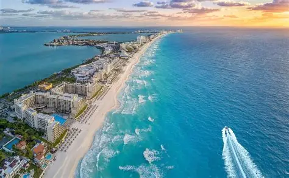

Lugares turísticos de México

Chichén Itzá

Chichén Itzá es uno de los sitios arqueológicos más visitados de México, recibiendo más de un millón de turistas al año. Debido a su arquitectura, astronomía y símbolismo religioso sigue siendo objeto de estudio y de admiración, representando un legado invaluable de la cultura maya.
Cancún

Cancún es uno de los lugares turísticos de México más visitados, debido a su combinación de playas caribeñas de arena blanca y agua turquesa ideales para el descanso y deportes acuáticos, además de poseer una infraestructura hotelera de lujo. También se encuentra cerca de importantes zonas arquelógicas mayas.
El Zócalo

El Zócalo es un lugar turístico de gran importancia de la Ciudad de México. En el Zócalo se pueden encontrar edificios históricos, museos y un ambiente que refleja la identidad mexicana. Es un lugar donde el pasado y el presente se encuentran, ofreciendo una experiencia multisensorial que cautiva a los turistas.